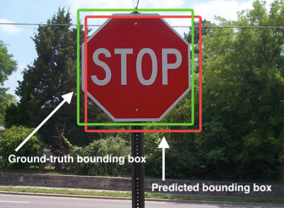
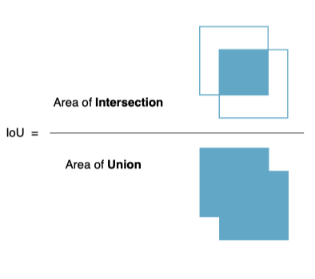

4.2. 辅助功能
学习目标
- 能够实现两个目标框的交并比
- 了解候选框在多目标跟踪中的表达方式及相应转换方法
IOU是交并比（Intersection-over-Union）是目标检测中使用的一个概念是产生的候选框（candidate bound）与原标记框（ground truth bound）的交叠率，即它们的交集与并集的比值。最理想情况是完全重叠，即比值为1。在多目标跟踪中，用来判别跟踪框和目标检测框之间的相似度。

1.计算交并比
IoU是两个区域的交除以两个区域的并得出的结果

def iou(bb_test, bb_gt):
"""
在两个box间计算IOU
:param bb_test: box1 = [x1y1x2y2]
:param bb_gt: box2 = [x1y1x2y2]
:return: 交并比IOU
"""
xx1 = np.maximum(bb_test[0], bb_gt[0])
yy1 = np.maximum(bb_test[1], bb_gt[1])
xx2 = np.minimum(bb_test[2], bb_gt[2])
yy2 = np.minimum(bb_test[3], bb_gt[3])
w = np.maximum(0., xx2 - xx1)
h = np.maximum(0., yy2 - yy1)
wh = w * h
o = wh / ((bb_test[2] - bb_test[0]) * (bb_test[3] - bb_test[1]) + (bb_gt[2] - bb_gt[0]) * (
bb_gt[3] - bb_gt[1]) - wh)
return o
2.候选框的表示形式
在该项目中候选框有两种表示形式：
- [x1,y1,x2,y2] 表示左上角坐标和右下角坐标，目标检测的结果以该方式表示
- [x,y,s,r]表示中心点坐标，s 是面积尺度，r是纵横比，卡尔曼滤波器中进行运动估计是使用该方式。
这两种方式要进行相互的转换。
- 将候选框从坐标形式转换为中心点坐标和面积的形式
def convert_bbox_to_z(bbox):
"""
将[x1,y1,x2,y2]形式的检测框转为滤波器的状态表示形式[x,y,s,r]。其中x，y是框的中心坐标，s是面积，尺度，r是宽高比
:param bbox: [x1,y1,x2,y2] 分别是左上角坐标和右下角坐标
:return: [ x, y, s, r ] 4行1列，其中x,y是box中心位置的坐标，s是面积，r是纵横比w/h
"""
w = bbox[2] - bbox[0]
h = bbox[3] - bbox[1]
x = bbox[0] + w / 2.
y = bbox[1] + h / 2.
s = w * h
r = w / float(h)
return np.array([x, y, s, r]).reshape((4, 1))
- 将候选框从中心面积的形式转换为坐标的形式
def convert_x_to_bbox(x, score=None):
"""
将[cx，cy，s，r]的目标框表示转为[x_min，y_min，x_max，y_max]的形式
:param x:[ x, y, s, r ],其中x,y是box中心位置的坐标，s是面积，r
:param score: 置信度
:return:[x1,y1,x2,y2],左上角坐标和右下角坐标
"""
w = np.sqrt(x[2] * x[3])
h = x[2] / w
if score is None:
return np.array([x[0] - w / 2., x[1] - h / 2., x[0] + w / 2., x[1] + h / 2.]).reshape((1, 4))
else:
return np.array([x[0] - w / 2., x[1] - h / 2., x[0] + w / 2., x[1] + h / 2., score]).reshape((1, 5))
总结
IOU的计算方法：两个区域的交比上两个区域的并，即为IOU
候选框不同表示方式之间的转换：
[x1,y1,x2,y2] 表示左上角坐标和右下角坐标
[x,y,s,r]表示中心点坐标，s 是面积尺度，r是纵横比